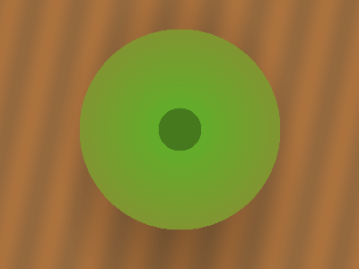

Media should keep its real colors.
Turn Dark Mode on. The cream page chrome and the CSS swatches should invert. Photos, video-like canvas, and photo backgrounds should not.
How to read this page
Red CSS boxes become cyan when invert works. A red stripe in a photo must stay
red. Inline SVG icons follow the page (they invert). Raster photos, canvas, and
most background-image photos are un-inverted.
CSS color (should invert)
<img> photos (should stay true-color)

background-image (should stay true-color)
CSS class
Stylesheet url()
inline style
style="background-image"
::before
Pseudo-element
pattern
script
Added after load
should invert with page
Tiny background (24×24)
Gold disc. After invert it should look blue-ish, like other icons.
should invert with page
Text-heavy background
This caption is long enough that Darkside leaves the background inverted
with the rest of the article instead of treating it as a photo.
<svg> (icons follow the page; rasters do not)
should invert with page
Inline SVG icons
should invert with page
img src="*.svg"
should stay true-color